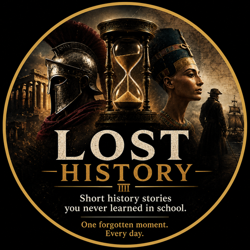

An AI-assisted historical short-form content platform. We surface forgotten historical events, mysteries, and discoveries through short educational videos published on YouTube Shorts and TikTok.
Lost History is an educational media project focused on forgotten historical stories — mysteries, scientific discoveries, expeditions, and unusual events from around the world. Our goal is to make overlooked history accessible in a short, engaging format, sourced from verifiable historical references.
Lost History uses the TikTok Login Kit and Content Posting API to allow our own publishing pipeline to authenticate as, and publish approved educational videos directly to, our official TikTok account (@losthistoryshorts). No end-user data is accessed or processed through this integration — it authenticates solely as our own channel.